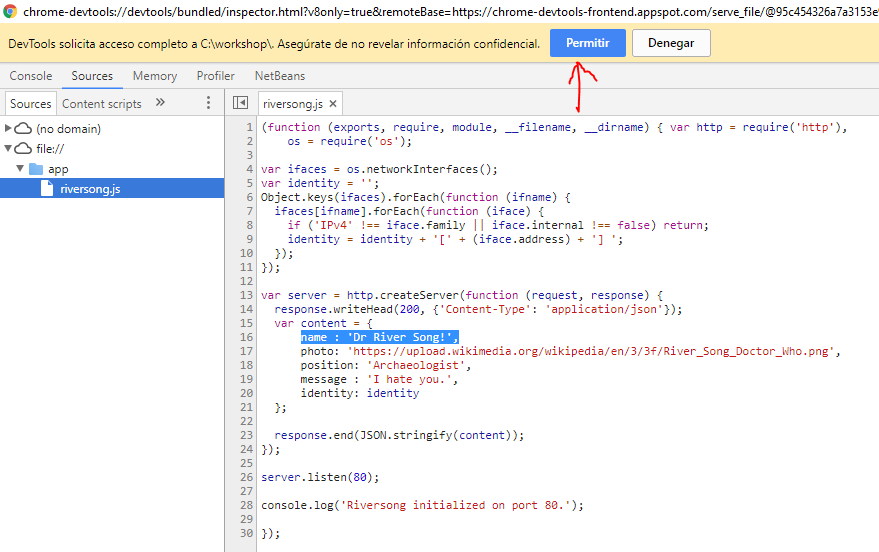
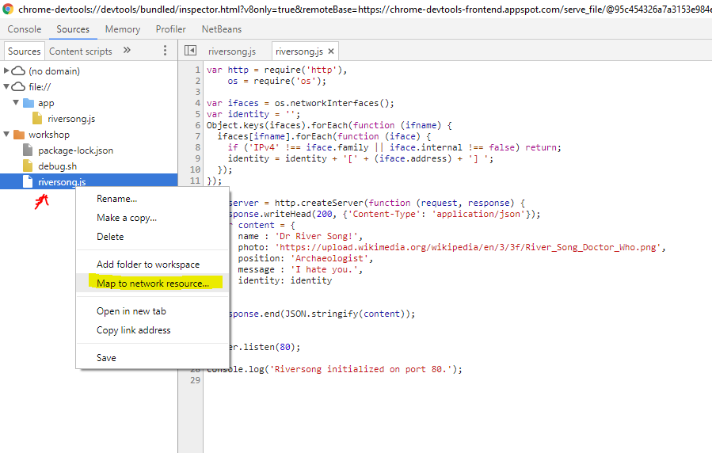

<local-folder> with the path to your working directory all along this document. node:alpine image, for example:docker run --rm -it node:alpine
> console.log('Hi world!');
> .exit
/workshop) and add the file riversong.jsto it. Place this content inside:var http = require('http'),
os = require('os');
var ifaces = os.networkInterfaces();
var identity = '';
Object.keys(ifaces).forEach(function (ifname) {
ifaces[ifname].forEach(function (iface) {
if ('IPv4' !== iface.family || iface.internal !== false) return;
identity = identity + '[' + (iface.address) + '] ';
});
});
var server = http.createServer(function (request, response) {
response.writeHead(200, {'Content-Type': 'application/json'});
var content = {
name : 'Dr River Song!',
photo: 'https://upload.wikimedia.org/wikipedia/en/3/3f/River_Song_Doctor_Who.png',
position: 'Archaeologist',
message : 'I hate you.',
identity: identity
};
response.end(JSON.stringify(content));
});
server.listen(80);
console.log('Riversong initialized on port 80.');
docker run --rm --detach --publish 80:80 -w=/app --volume <local-folder>:/app node:alpine node riversong.js
localhost:80. A continuación termina el contenedor con docker kill <container-id>.--inspect para activar la depuración remota (el puerto por defecto es el 9229).docker run --rm -it --publish 80:80 --publish 9229:9229 -w=/app --volume <local-folder>:/app node:alpine node --inspect=0.0.0.0:9229 riversong.js
about:inspect. Pulsa en el botón inspect.
riversong.js. Pulsa sobre el número de línea 14 para fijar un breakpoint:
Invoca desde otra ventana la aplicación abriendo localhost:80 y verás que puedes inspeccionar variables y ejecutar paso a paso sin ningún problema.
Cuando termines asegúrate de eliminar el contenedor. Puedes utilizar docker ps para averiguar su identificador y docker kill <id> para acabar con él rápidamente.
nodemon es un wrapper para node que facilita la recarga del proyecto. Puede hacerlo cuando modificas uno de los ficheros o bajo demando cuando recibe la orden rs. Vamos a añadirlo para poder editar desde la carpeta local y recargar el código si necesidad de crear un nuevo contenedor.
debug.sh:#/bin/sh
npm install -g nodemon
nodemon --inspect=0.0.0.0:9229 riversong.js
nodemon y tras ello ejecuta nuestro programa. Arranca un contenedor que lo lance con docker run --rm -it --publish 9229:9229 --publish 80:80 -w/app --volume <local-folder>:/app node:alpine /bin/sh -c "/app/debug.sh"
---
name : 'Dr River Song!',
+++
name : 'Dr River Song!!!!!!!!!!!!',
nodemon parle la orden de recarga: rs
http://localhost:80Add folder to workspace. A continuación busca la carpeta en la que tienes el código de tu aplicación y acepta dar permisos al navegador para manipularla:


riversong.js y pulsa sobre Map to network resource. Después selecciona la ruta que te sugiere que encaja con él:

Descargar nodemon en cada ejecición es muy lento. Vamos a crear una imagen que incluya todas esas dependencias como un layer de manera que solo sea necesario ejecutar npm en el momento de construirla.
Dockerfile-dev (sin extensión) en la carpeta de trabajo y pon esto como contenido:FROM node:alpine
RUN npm install -g nodemon
COPY riversong.js .
EXPOSE 80
CMD ["nodemon", "--inspect=0.0.0.0:9229", "riversong.js"]
build para construir la imagen (no te olvides del punto para indicar la carpeta de contexto).docker build -t riversong:dev -f Dockerfile-dev .
docker run --rm -it --publish 9229:9229 --publish 80:80 -w/app --volume <local-folder>:/app riversong:dev
Dockerfile para producción es aún más sencillo:FROM node:alpine
COPY riversong.js .
EXPOSE 80
CMD ["node", "riversong.js"]
docker build -t <repo>/riversong:port80 .
docker push <repo>/riversong:port80
Ya sabes cómo puedes disfrutar de las ventajas de utilizar Docker sin perder la capacidad de editar el código cómodamente y depurarlo con las herramientas a las que estás acostumbrado.